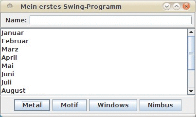
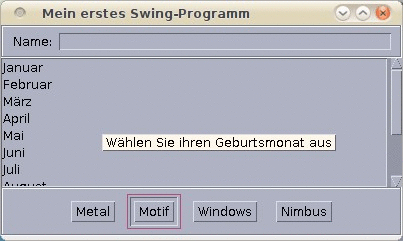
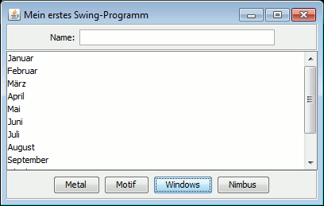
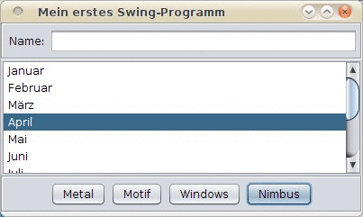

36.2 Ein einführendes Beispiel
36.2.1 Das Beispielprogramm
In diesem Abschnitt soll ein einfaches Beispielprogramm vorgestellt
werden. Es handelt sich um eine einfache (und weitgehend sinnfreie)
Swing-Anwendung mit einem Hauptfenster, in dem drei Gruppen von Komponenten
untergebracht sind:
- Ganz oben befindet sich ein Panel mit einem Label und einem Textfeld,
in dem ein Name eingegeben werden kann. Das Label besitzt neben seiner
Beschriftung ein Icon mit einem kleinen blauen Pfeil.
- In der Mitte enthält das Programm eine Liste, aus der ein
Monatsname ausgewählt werden kann.
- Unten befindet sich ein Panel mit drei Buttons, mit denen zwischen
den drei vordefinierten Look-and-Feels umgeschaltet werden kann.
Die beiden Panels wurden mit einer Umrandung versehen und alle aktiven
Elemente zeigen Tooltips an, wenn man mit dem Mauszeiger darauf zeigt.
Durch Drücken auf den Schließen-Button in der Titelleiste
kann das Programm beendet werden. Die übrigen Dialogelemente
besitzen - neben ihrem Standardverhalten - keinerlei zusätzliche
Funktionalität.
Abbildung 36.1 zeigt das Beispielprogramm
mit dem Standard-Look-and-Feel von Java-Programmen (das auch als Metal-Look-and-Feel
bezeichnet wird):

Abbildung 36.1: Das Beispielprogramm im Metal-Look-and-Feel (unter
Ubuntu)
Oben links ist das Label »Name« mit seinem zugeordeten Icon
zu erkennen. In das Textfeld wurde bereits der String »Meier,
Karl-Friedrich« eingetragen. In der Liste ist der Monat Juni
ausgewählt und ihr Tooltip wird angezeigt, weil der Mauszeiger
über der Liste verweilt. Die beiden Panels haben eine zusätzliche
Umrandung, die vom Programm explizit hinzugefügt wurde.
Durch Drücken der Buttons kann das Look-and-Feel umgeschaltet
werden. Abbildung 36.2 zeigt
das Programm mit aktiviertem Motif-, Abbildung 36.3
mit aktiviertem Windows-Look-and-Feel.

Abbildung 36.2: Das Beispielprogramm im Motif-Look-and-Feel (unter
Ubuntu)

Abbildung 36.3: Das Beispielprogramm im Windows-Look-and-Feel (unter
Windows 7)

Abbildung 36.4: Das Beispielprogramm im Nimbus-Look-and-Feel (unter
Ubuntu)
36.2.2 Beschreibung des Beispielprogramms
Zunächst wollen wir uns den Quellcode des Beispielprogramms ansehen.
Er besteht aus der Klasse für das Hauptfenster, die lediglich
einen parameterlosen Konstruktor und die Methode actionPerformed
enthält. Der Programmcode ähnelt den Beispielen, die wir
zum AWT gesehen haben:
001 /* Listing3601.java */
002
003 import java.awt.event.*;
004 import java.awt.*;
005 import javax.swing.*;
006
007 public class Listing3601
008 extends JFrame
009 implements ActionListener
010 {
011 private static final String[] MONTHS = {
012 "Januar", "Februar", "März", "April",
013 "Mai", "Juni", "Juli", "August",
014 "September", "Oktober", "November", "Dezember"
015 };
016
017 public Listing3601()
018 {
019 super("Mein erstes Swing-Programm");
020 //Panel zur Namenseingabe hinzufügen
021 JPanel namePanel = new JPanel();
022 JLabel label = new JLabel(
023 "Name:",
024 new ImageIcon("triblue.gif"),
025 SwingConstants.LEFT
026 );
027 namePanel.add(label);
028 JTextField tf = new JTextField(30);
029 tf.setToolTipText("Geben Sie ihren Namen ein");
030 namePanel.add(tf);
031 namePanel.setBorder(BorderFactory.createEtchedBorder());
032 getContentPane().add(namePanel, BorderLayout.NORTH);
033 //Monatsliste hinzufügen
034 JList<String> list = new JList<String>(MONTHS);
035 list.setToolTipText("Wählen Sie ihren Geburtsmonat aus");
036 getContentPane().add(new JScrollPane(list), BorderLayout.CENTER);
037 //Panel mit den Buttons hinzufügen
038 JPanel buttonPanel = new JPanel();
039 JButton button1 = new JButton("Metal");
040 button1.addActionListener(this);
041 button1.setToolTipText("Metal-Look-and-Feel aktivieren");
042 buttonPanel.add(button1);
043 JButton button2 = new JButton("Motif");
044 button2.addActionListener(this);
045 button2.setToolTipText("Motif-Look-and-Feel aktivieren");
046 buttonPanel.add(button2);
047 JButton button3 = new JButton("Windows");
048 button3.addActionListener(this);
049 button3.setToolTipText("Windows-Look-and-Feel aktivieren");
050 buttonPanel.add(button3);
051 JButton button4 = new JButton("Nimbus");
052 button4.addActionListener(this);
053 button4.setToolTipText("Nimbus-Look-and-Feel aktivieren");
054 buttonPanel.add(button4);
055 buttonPanel.setBorder(BorderFactory.createEtchedBorder());
056 getContentPane().add(buttonPanel, BorderLayout.SOUTH);
057 //Windows-Listener
058 addWindowListener(new WindowClosingAdapter(true));
059 }
060
061 public void actionPerformed(ActionEvent event)
062 {
063 String cmd = event.getActionCommand();
064 try {
065 //PLAF-Klasse auswählen
066 String plaf = "unknown";
067 if (cmd.equals("Metal")) {
068 plaf = "javax.swing.plaf.metal.MetalLookAndFeel";
069 } else if (cmd.equals("Motif")) {
070 plaf = "com.sun.java.swing.plaf.motif.MotifLookAndFeel";
071 } else if (cmd.equals("Windows")) {
072 plaf = "com.sun.java.swing.plaf.windows.WindowsLookAndFeel";
073 } else if (cmd.equals("Nimbus")) {
074 plaf = "javax.swing.plaf.nimbus.NimbusLookAndFeel";
075 }
076 //LAF umschalten
077 UIManager.setLookAndFeel(plaf);
078 SwingUtilities.updateComponentTreeUI(this);
079 } catch (UnsupportedLookAndFeelException e) {
080 System.err.println(e.toString());
081 } catch (ClassNotFoundException e) {
082 System.err.println(e.toString());
083 } catch (InstantiationException e) {
084 System.err.println(e.toString());
085 } catch (IllegalAccessException e) {
086 System.err.println(e.toString());
087 }
088 }
089
090 public static void main(String[] args)
091 {
092 Listing3601 frame = new Listing3601();
093 frame.setLocation(100, 100);
094 frame.pack();
095 frame.setVisible(true);
096 }
097 }
|
Listing3601.java |
Listing 36.1: Ein einfaches Swing-Beispielprogramm
Die import-Anweisungen
Obwohl alle Swing-Komponenten in javax.swing
und seinen Unterpaketen stecken, benötigen wir in diesem Beispiel
den Import des Pakets java.awt.
Neben den Dialogelementen gibt es andere Klassen aus java.awt,
die häufig auch in Swing-Programmen benötigt werden, etwa
die Layoutmanager, Color-
oder Font-Objekte
oder die Klasse Graphics.
Das Paket java.awt.event
wird regelmäßig auch in Swing-Programmen benötigt,
denn es enthält die Klassen für das Versenden von Events
und Registrieren von Event-Handlern. Diese werden in Swing-Programmen
in der gleichen Art und Weise benötigt wie in AWT-Programmen.
JFrame
Das Hauptfenster unserer Anwendung ist aus der Klasse JFrame
abgeleitet, die ihrerseits aus Frame
abgeleitet ist. JFrame
ist eine der vier Klassen, mit denen in Swing Hauptfenster erzeugt
werden können (JDialog,
JWindow
und JApplet
sind die anderen drei). JFrame
hat ähnliche Eigenschaften wie Frame
und wird auch ähnlich programmiert wie diese. Beide unterscheiden
sich jedoch in einem bedeutenden Punkt voneinander.
In Zeile 032 ist zu
sehen, dass eine Komponente nicht einfach mit add
auf dem Fenster platziert wird. Stattdessen wird zunächst eine
Methode getContentPane
aufgerufen und erst auf dem von ihr zurückgegebenen Container
wird das Dialogelement mit add
platziert. Diese - auf den ersten Blick umständliche - Vorgehensweise
ist allen Swing-Hauptfenstern gemein und wird durch deren innere Struktur
verursacht. Der eigentliche Container mit den sichtbaren Dialogelementen
(die ContentPane) ist nämlich
Bestandteil einer ganzen Reihe geschachtelter Komponenten, in denen
die übrigen Bestandteile des Fensters (etwa dessen Menü)
untergebracht sind.
 |
|
Neben add
durften in früheren JDKs auch die Methoden setLayout
und remove
nicht direkt auf dem Hauptfenster aufgerufen werden.
Weil es immer wieder zu Missverständnissen kam, entschied man
sich mit Version 5 des JDK, diese Methoden am JFrame
zu überschreiben und den Aufruf an die ContentPane
zu delegieren.
In den neuen JDKs können Sie Zeile 032
daher kurz so schreiben:
add(namePanel, BorderLayout.NORTH);
Die »alte Schreibweise« ist natürlich weiterhin erlaubt
und auch noch recht weit verbreitet. |
|
|
|
JPanel
Die Buttonleiste und das Label mit seinem Textfeld werden im Beispielprogramm
auf einem JPanel
platziert. JPanel
ist das Swing-Pendant zu Panel
und dient wie dieses dazu, eine Reihe von Dialogelementen unter Kontrolle
eines eigenen Layoutmanagers anzuordnen. Anders als bei den Hauptfenstern
gibt es hier keine ContentPane, sondern die Dialogelemente
und der Layoutmanager werden dem Panel direkt zugewiesen. Die Bedienung
eines JPanel
entspricht fast vollständig der eines Panel.
JLabel
Ein JLabel
ist ein Dialogelement zur Anzeige eines (meist unveränderlichen)
Textes. Es wird im Beispielprogramm verwendet, um das Textfeld im
oberen Teil des Fensters zu beschriften. Im Gegensatz zu einem Label
kann ein JLabel
zusätzlich ein Icon enthalten. Im Beispielprogramm wird es in
Zeile 024 direkt an
den Konstruktor der Klasse übergeben. Auf diese Weise ist es
sehr einfach möglich, zusätzliche grafische Elemente in
Swing-Dialogen zu platzieren.
JTextField
Ein JTextField
repräsentiert ein einzeiliges Eingabefeld für Textdaten.
Für einfache Anwendungsfälle entspricht seine Bedienung
der Klasse TextField.
Unser Beispiel verwendet es zur Eingabe eines Namens. Zur verdeckten
Eingabe von Passwörtern eignet sich die aus JTextField
abgeleitete Klasse JPasswordField.
Sie entspricht einem TextField
nach Aufruf von setEchoCharacter.
Einige der Dialogelemente im Beispielprogramm enthalten einen Tooltip-Text.
Dieser wird angezeigt, wenn die Maus über das Dialogelement bewegt
und dort gehalten wird. Ein Tooltip sollte zusätzliche Informationen
geben, die dem unerfahrenen Anwender eine Hilfe bei der Bedienung
des Programms sind. Tooltips werden mit der Methode setToolTipText
definiert, die alle aus JComponent
abgeleiteten Komponenten besitzen.
Eine andere Fähigkeit, die ebenfalls bereits in der Klasse JComponent
realisiert wurde, besteht darin, beliebigen Komponenten eine Umrandung
zuweisen zu können. Das Beispielprogramm versieht seine beiden
Panels mit einem eingelassenen Rahmen (Zeile 031
und Zeile 055). Dazu
ist lediglich ein Aufruf der Methode setBorder
mit Übergabe einer Instanz der Klasse Border
erforderlich. Diese wird meist mit Hilfe einer der create-Methoden
der Klasse BorderFactory
erzeugt.
JList und JScrollPane
Eine JList
ist eine Liste von Werten, von denen einer oder mehrere ausgewählt
werden können. Ihre Bedienung ähnelt der aus dem AWT bekannten
Klasse List;
ihre Fähigkeiten gehen aber über diese hinaus. JList
ist ein gutes Beispiel für die Aufteilung der Swing-Komponenten
in Benutzerschnittstelle und Model. Anstatt - wie in unserem Beispiel
- einfach ein Array von festen Werten an den Konstruktor zu übergeben,
können mit Hilfe eines Listenmodells (repräsentiert durch
eine Instanz der Klasse ListModel)
sehr komplexe und dynamische Datenstrukturen in der Liste präsentiert
werden. Auch die Benutzeroberfläche ist veränderbar. Mit
Hilfe eigener »Renderer« können neben einfachen Texten
beispielsweise auch Grafiken oder andere Objekte angezeigt werden.
In Zeile 036 kann man
noch eine Besonderheit sehen. Eine JList
bietet standardmäßig keine Möglichkeit zum Scrollen
ihres Inhalts. Wird sie ohne weitere Maßnahmen auf dem Panel
platziert, können nur Elemente aus dem sichtbaren Bereich ausgewählt
werden. Dieses Eigenschaft teilt sie mit anderen komplexen Swing-Elementen.
Glücklicherweise gibt es eine einfache Lösung für dieses
Problem. Die Liste ist nämlich lediglich in eine JScrollPane
einzubetten, die an ihrer Stelle auf dem Dialog platziert wird. Dieses
vielseitige Dialogelement versieht Dialogelemente, die mehr Platz
benötigen, als auf dem Bildschirm zur Verfügung steht, mit
Schiebereglern und kümmert sich um alle Details des Scrollens
der Daten.
JButton
Als letztes Dialogelement in unserem Beispiel wird die Klasse JButton
verwendet. Sie dient zur Darstellung von Schaltflächen und erbt
die meisten Eigenschaften aus ihrer Vaterklasse AbstractButton
(die ihre Eigenschaften übrigens auch an Menüeinträge
vererbt). Wie im Programm zu sehen, entsprechen die Grundlagen der
Bedienung von JButton
denen der Klasse Button.
Umschalten des Look-and-Feel
Wie in Abschnitt 36.1.2
erwähnt, kann das Look-and-Feel von Swing-Programmen zur Laufzeit
umgeschaltet werden. Im Beispielprogramm ist das ab Zeile 065
zu sehen. Abhängig davon, welcher Button gedrückt wurde,
wird der Variablen plaf der
Klassenname einer Look-and-Feel-Implementierung zugewiesen. Durch
Aufruf der Methode setLookAndFeel
wird der UIManager
angewiesen, das Look-and-Feel umzuschalten. Damit die Änderungen
auch bei bereits auf dem Bildschirm befindlichen Dialogelementen sichtbar
werden, wird anschließend durch Aufruf von updateComponentTreeUI
der Klasse SwingUtilities
der gesamte Dialog neu dargestellt.